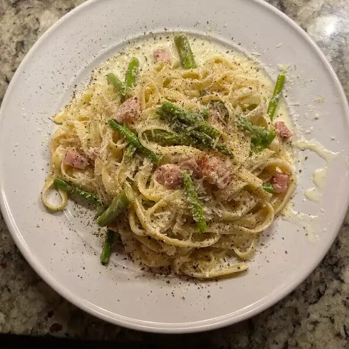

Ham and Asparagus Fettuccine Alfredo

Description
Fettuccine made with leftover ham that takes on a heartiness and richness so filling there isn't room for dessert.
Ingredients
- 12 ounces dry fettuccine noodles
- 8 ounes fresh asparagus, trimmed and cut into 2 inch pieces
- 1/2 cup butter
- 2 cups heavy cream
- 3/4 cup grated Parmesan cheese
- 1/4 teaspoon garlic powder
- 1 pinch cayenne pepper
- 1/2 pound cooked ham, diced
Steps
- Bring a large pot of lightly salted water to a boil. Add pasta and cook for 8 to 10 minutes or until al dente. Stir asparagus into pot in the last five minutes of cooking; drain.
- While pasta is cooking, heat butter and cream in a medium saucepan over medium heat. When mixture begins to bubble, stir in Parmesan, garlic powder, pepper and cayenne. Continue cooking until mixture thickens, stirring occasionally. Stir in ham and heat through.
- Toss pasta and asparagus with sauce and serve immediately.